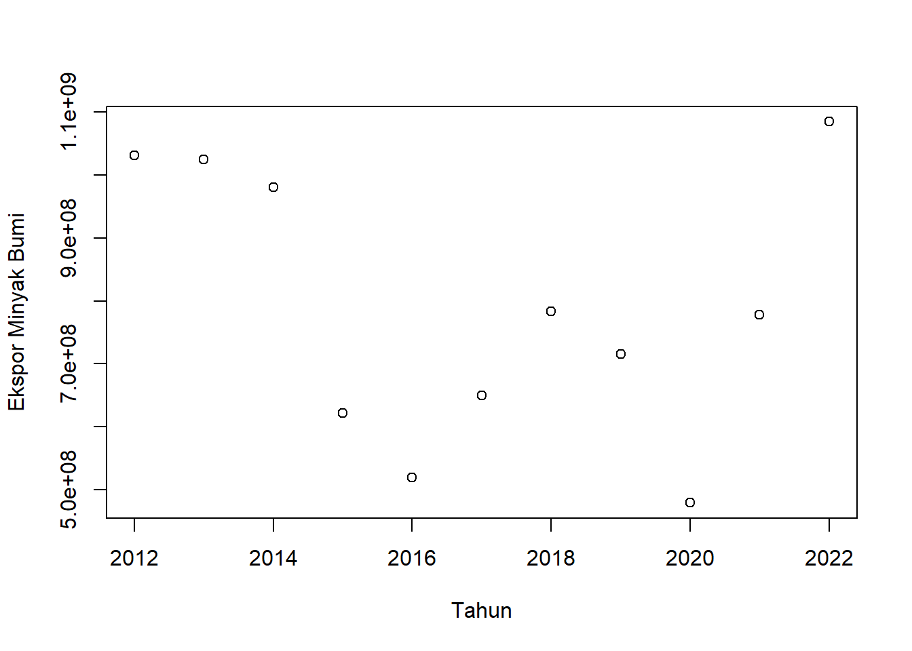
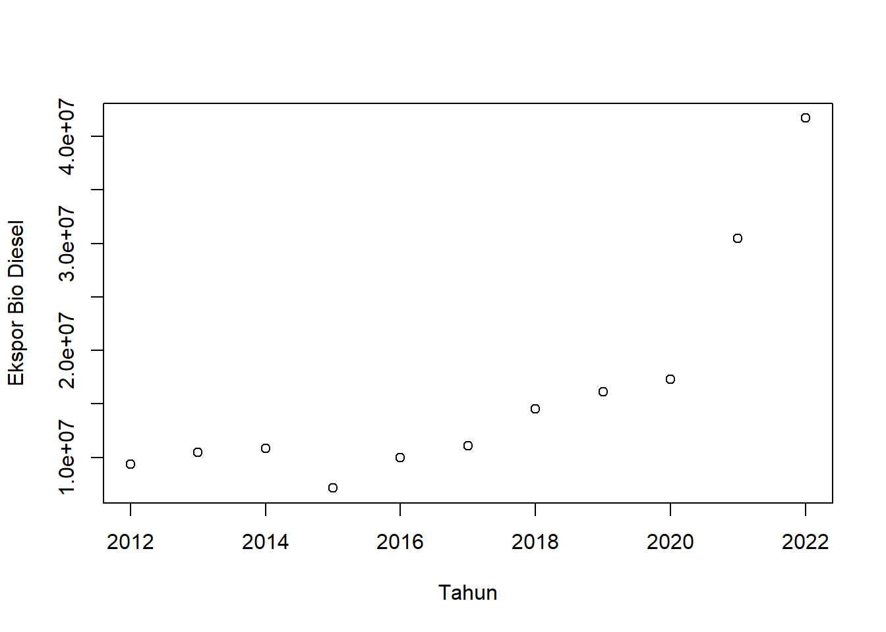
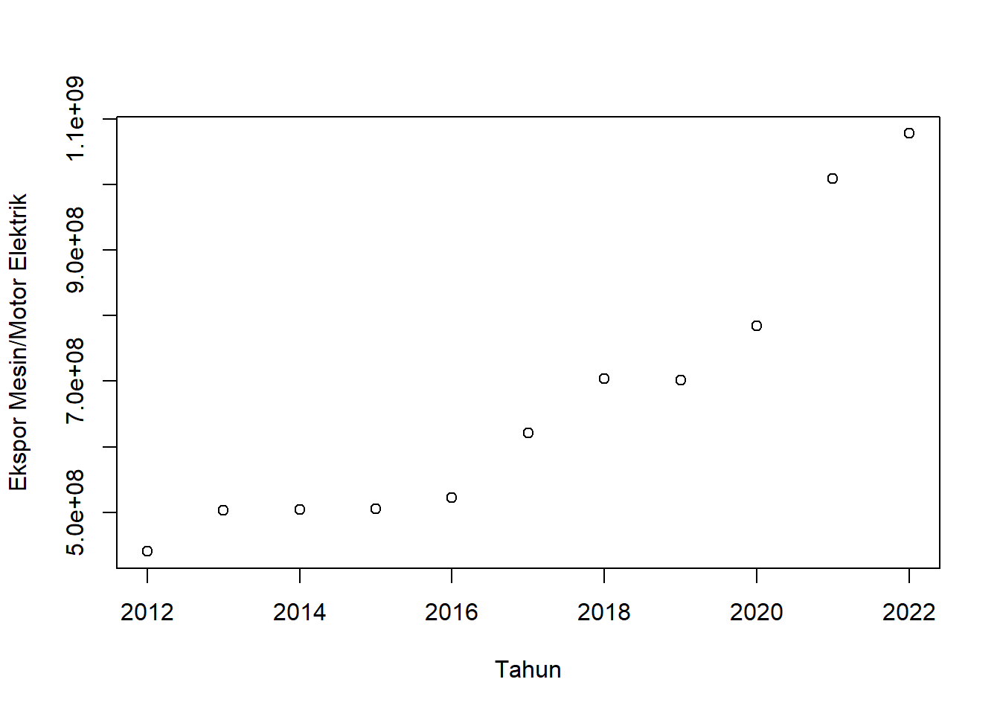
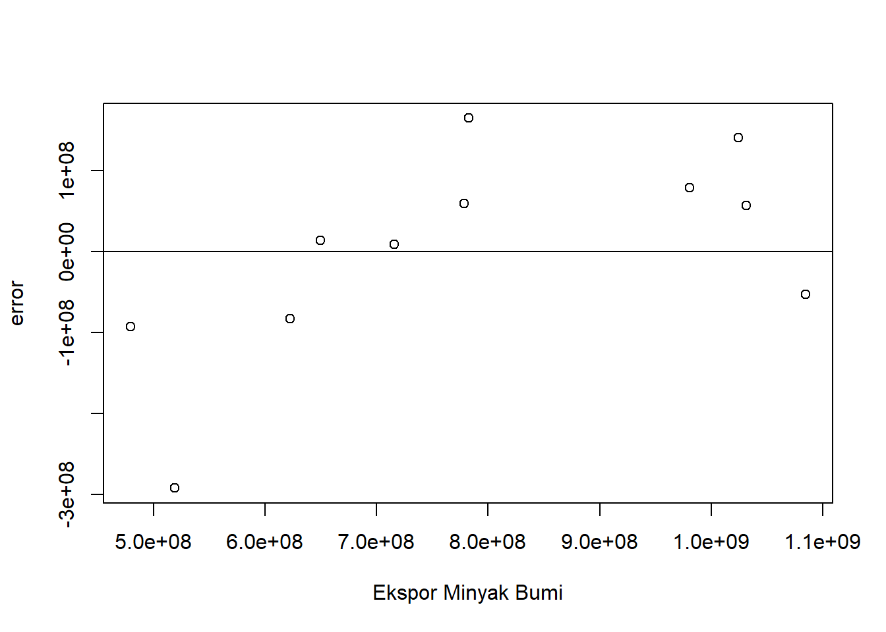
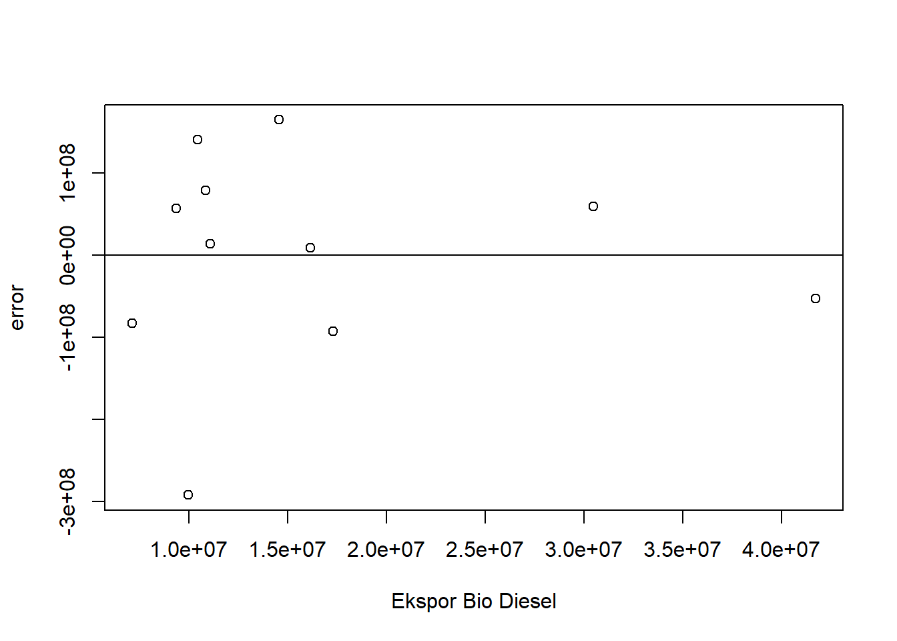
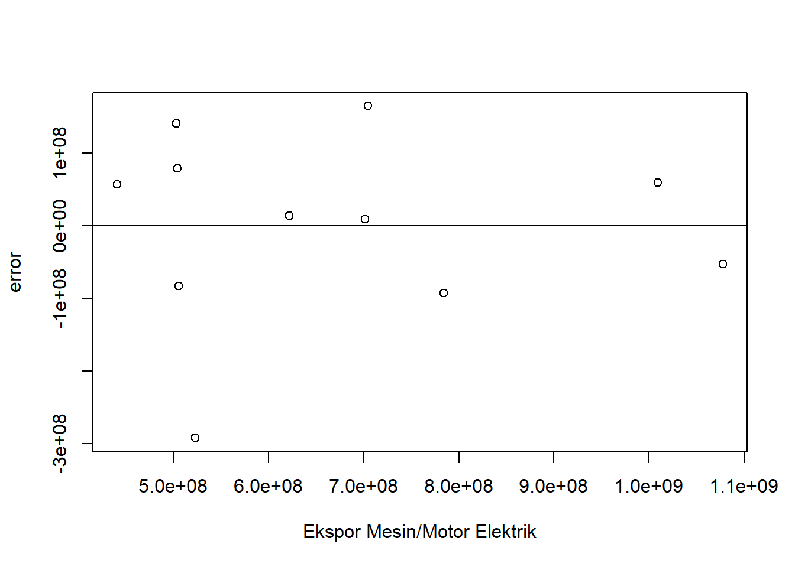

setwd("D:/METOPEL UAS/CACA METOPEL")
library(readxl)
library(tidyverse)
library(kableExtra)Pengaruh Ekspor Sumber Energi Terbarukan terhadap Minyak Bumi Dunia.
Metode Penelitian Politeknik APP Jakarta

1 Pendahuluan
1.1 Latar belakang
Dalam konteks global, minyak bumi telah menjadi sumber energi utama yang digunakan oleh berbagai negara. Namun, dengan meningkatnya kebutuhan energi dan tantangan lingkungan, teknologi alternatif seperti mesin elektrik dan biodiesel mulai mendapatkan perhatian. Mesin elektrik dan biodiesel menawarkan solusi yang lebih ramah lingkungan dan berkelanjutan dibandingkan dengan minyak bumi. Dalam makalah ini, kami akan menganalisis pengaruh ekspor mesin elektrik dan biodiesel terhadap ekspor minyak bumi di skala global.
Untuk mencapai tujuan ini, kami akan menggunakan metode regresi linear berganda, sebuah metode statistik yang memungkinkan kita untuk memahami hubungan antara dua atau lebih variabel. Dalam hal ini, variabel dependen adalah ekspor minyak bumi, sedangkan variabel independen adalah ekspor mesin elektrik dan biodiesel. Melalui analisis ini, kami berharap dapat memberikan wawasan baru tentang dinamika pasar energi global dan bagaimana teknologi alternatif dapat mempengaruhi pasar minyak bumi.
Tujuan utama penelitian adalah untuk memberikan pemahaman yang lebih baik tentang hubungan antara variabel-variabel ini dan bagaimana mereka dapat mempengaruhi satu sama lain.
1.2 Ruang lingkup
Ruang lingkup penelitian ini meliputi:
Variabel yang Dianalisis: Penelitian ini berfokus pada tiga variabel utama, yaitu ekspor minyak bumi, ekspor mesin elektrik, dan ekspor biodiesel. Tujuan utama adalah untuk menganalisis bagaimana ekspor mesin elektrik dan biodiesel mempengaruhi ekspor minyak bumi di skala global.
Metode Analisis: Penelitian ini menggunakan metode regresi linear berganda untuk menganalisis data. Metode ini memungkinkan kita untuk memahami hubungan antara dua atau lebih variabel. Dalam hal ini, variabel dependen adalah ekspor minyak bumi, sedangkan variabel independen adalah ekspor mesin elektrik dan biodiesel.
Manfaat Hasil Analisis untuk Mahasiswa: Hasil analisis ini dapat memberikan manfaat bagi mahasiswa, terutama mereka yang belajar di bidang ekonomi, perdagangan internasional, dan energi. Mahasiswa dapat memahami dinamika pasar energi global dan bagaimana teknologi alternatif dapat mempengaruhi pasar minyak bumi. Selain itu, mereka juga dapat belajar tentang penggunaan metode regresi linear berganda dalam penelitian.
1.3 Rumusan masalah
Berikut adalah rumusan masalah dalam penelitian ini:
Bagaimana pengaruh ekspor mesin elektrik terhadap ekspor minyak bumi di skala global?
Bagaimana pengaruh ekspor biodiesel terhadap ekspor minyak bumi di skala global?
Apakah ada hubungan signifikan antara ekspor mesin elektrik dan biodiesel terhadap ekspor minyak bumi ketika dianalisis bersama-sama?
Bagaimana metode regresi linear berganda dapat digunakan untuk menganalisis hubungan antara variabel-variabel tersebut?
Bagaimana hasil analisis ini dapat memberikan manfaat bagi mahasiswa, khususnya dalam memahami dinamika pasar energi global dan penggunaan metode regresi linear berganda dalam penelitian?
1.4 Tujuan dan manfaat penelitian
Berikut adalah tujuan dan manfaat penelitian:
Tujuan Penelitian:
Untuk menganalisis pengaruh ekspor mesin elektrik terhadap ekspor minyak bumi di skala global.
Untuk menganalisis pengaruh ekspor biodiesel terhadap ekspor minyak bumi di skala global.
Untuk memahami hubungan antara ekspor mesin elektrik dan biodiesel terhadap ekspor minyak bumi menggunakan metode regresi linear berganda.
Manfaat Penelitian:
Hasil penelitian ini dapat memberikan pemahaman yang lebih baik tentang dinamika pasar energi global dan bagaimana teknologi alternatif dapat mempengaruhi pasar minyak bumi.
Penelitian ini juga dapat menjadi referensi bagi mahasiswa atau peneliti lain yang ingin melakukan penelitian serupa atau lebih lanjut dalam bidang ini.
Mahasiswa dapat belajar tentang penggunaan metode regresi linear berganda dalam penelitian dan bagaimana menerapkannya dalam konteks nyata.
Hasil penelitian ini dapat digunakan sebagai bahan diskusi atau studi kasus dalam mata kuliah terkait, seperti ekonomi, perdagangan internasional, dan energi.
1.5 Package
2 Studi pustaka
Energi merupakan kebutuhan dasar manusia, yang terus meningkat sejalan dengantingkat kehidupannya. Bahan bakar minyak (BBM) memegang posisi yang sangatdominan dalam pemenuhan kebutuhan energi nasional. (Imam,2015)
Bahan Bakar Minyak (BBM) merupakan komoditas yang memegang peranan vital dalam semua aktivitas ekonomi. Dampak langsung perubahan harga minyak ini adalah perubahan perubahan biaya operasional yang mengakibatkan tingkat keuntungan kegiatan investasi langsung terkoreksi. Secara sederhana tujuan investasi adalah untuk maksimisasi kemakmuran melalui maksimisasi keuntungan, dan investor selalu berusaha mananamkan dana pada investasi yang efisien dan aman. (Arisyahidin, 2012)
Mengingat minyak bumi merupakan komoditas tidak terbarukan, maka konsumen perlu melakukan penghematan dalam menggunakannya. Fenomena produksi minyak bumi di lapisan volkanik Lapangan Iatibarang mempunyai karakteristik yang khas, karena adanya dual porositas dari batuan matriks dun rekahan. (Budi, 2002)
Biodiesel merupakan senyawa metil ester dengan asam lemak rantai panjang seperti laurat, palmitat,stearat, oleat, dan lain‐lain. Biodiesel merupakan bahan bakar alternatif dari sumber daya terbarukan (renewable resources), dengan komposisi ester asam lemak dari minyak nabati antara lain: minyak kelapa sawit, minyak kelapa, minyak jarak pagar,minyak biji kapuk, dan masih ada lebih dari 30 macam tumbuhan Indonesia yang memiliki potensial untuk dijadikan bahan baku pembuatan biodiesel (Lemigas, 2005).
Sebagai bahan bakar alternatif, biodiesel memiliki banyak keunggulan dibandingkan dengan bahan bakar minyak bumi diantaranya: ramah lingkungan, emisi pencemaran udara yang relatif rendah, dapat terurai secara alami (biodegradable), dan bisa digunakan tanpa memerlukan proses modifikasi mesin. Biodiesel dihasilkan melalui reaksi transesterifikasi, yaitu reaksi antara minyak nabati atau lemak hewani dengan alkohol menghasilkan alkil ester (biodiesel) dan hasil samping gliserol dengan bantuan katalis (Nairoj, 2009)
Motor berdaya listrik adalah mesin yang mengubah energi listrik menjadi energi mekanis. Motor listrik ini dapat ditemukan dalam berbagai peralatan rumah tangga dan industri, seperti pengering rambut, kipas angin, mesin cuci, mesin jahit, pompa air, blender, mixer, bor listrik, lemari es, penyedot debu, impeller pompa, fan, blower, menggerakan kompresor, dan lain-lain. Sementara itu, Kendaraan Bermotor Listrik Berbasis Baterai (KBLBB), atau Battery Electric Vehicle (BEV), adalah jenis kendaraan listrik (EV) yang menggunakan energi kimia yang disimpan dalam kemasan baterai isi ulang3. BEV menggunakan motor listrik dan pengendali motor alih-alih mesin pembakaran internal (ICE) sebagai penggerak. Mereka memperoleh semua daya dari kemasan baterai dan karenanya tidak memiliki mesin pembakaran internal, sel bahan bakar, atau tangki bahan bakar
Biodiesel merupakan bahan bakar yang ramah terhadap lingkungan. Biodiesel tidak mengandung berbahaya seperti Pb, bersifat biodegradable, emisi gas buangnya juga lebih rendah dibandingkan emisi bahan bakar diesel. Biodiesel memiliki efek pelumasan yang tinggi sehingga dapat memperpanjang umur mesin dan memiliki angka setana yang tinggi ( > 50).
Minyak nabati merupakan sumber bahan baku yang menjanjikan bagi proses produksi biodiesel karena bersifat terbarukan, dapat diproduksi dalam skala besar, dan ramah lingkungan (Wenten,2010).
Kegiatan perdagangan internasional yang memberikan rangsangan guna membutuhkan permintaan dalam negeri yang menyebabkan tumbuhnya industri-industri pabrik besar, bersamaan dengan struktur politik yang stabil dan lembaga sosial yang fleksibel. Berdasarkan uraian di atas, terlihat bahwa ekspor mencerminkan aktivitas perdagangan antarbangsa yang dapat memberikan dorongan dalam dinamika pertumbuhan perdagangan internasional, sehingga suatu negara-negara yang sedang berkembang kemungkinan untuk mencapai kemajuan perekonomian setaraf dengan negara-negara yang lebih maju (Todaro, 2002:49).
3 Metode penelitian
3.1 Data
| tahun | bio | minyak | motor |
|---|---|---|---|
| 2012 | $ 9.359.709,00 | $ 1.031.332.236,00 | $ 440.598.914,00 |
| 2013 | $ 10.452.561,00 | $ 1.024.190.253,00 | $ 502.985.103,00 |
| 2014 | $ 10.858.953,00 | $ 980.780.174,00 | $ 503.842.493,00 |
| 2015 | $ 7.127.356,00 | $ 622.294.364,00 | $ 505.639.939,00 |
| 2016 | $ 9.958.555,00 | $ 519.054.882,00 | $ 523.000.098,00 |
| 2017 | $ 11.094.195,00 | $ 649.896.044,00 | $ 621.643.304,00 |
| 2018 | $ 14.547.342,00 | $ 782.890.497,00 | $ 704.354.043,00 |
| 2019 | $ 16.138.518,00 | $ 715.891.657,00 | $ 701.605.832,00 |
| 2020 | $ 17.299.354,00 | $ 479.340.104,00 | $ 784.023.641,00 |
| 2021 | $ 30.462.810,00 | $ 778.334.675,00 | $ 1.009.019.563,00 |
| 2022 | $ 41.707.132,00 | $ 1.084.594.993,00 | $ 1.077.650.619,00 |
Penelitian ini berfokus pada analisis pengaruh ekspor mesin elektrik dan biodiesel terhadap ekspor minyak bumi di skala global selama periode 2012 hingga 2022. Metode utama yang digunakan dalam penelitian ini adalah regresi linear berganda, yang memungkinkan kita untuk memahami hubungan antara dua atau lebih variabel. Dalam konteks ini, variabel dependen adalah ekspor minyak bumi, sedangkan variabel independen adalah ekspor mesin elektrik dan biodiesel. Tujuan dari penelitian ini adalah untuk menentukan sejauh mana ekspor mesin elektrik dan biodiesel mempengaruhi ekspor minyak bumi selama periode waktu yang ditentukan. Dengan demikian, penelitian ini memberikan wawasan berharga tentang dinamika pasar energi global dan bagaimana teknologi alternatif dapat mempengaruhi pasar minyak bumi.
3.2 Metode analisis
Metode analisis yang digunakan dalam penelitian ini adalah regresi linear berganda. Metode ini dipilih karena memungkinkan kita untuk memahami hubungan antara dua atau lebih variabel. Dalam konteks penelitian ini, variabel dependen adalah ekspor minyak bumi, sedangkan variabel independen adalah ekspor mesin elektrik dan biodiesel. Regresi linear berganda memungkinkan kita untuk menentukan sejauh mana variabel independen mempengaruhi variabel dependen. Selain itu, metode ini juga memungkinkan kita untuk mengontrol variabel lain yang mungkin mempengaruhi variabel dependen. Oleh karena itu, regresi linear berganda adalah pilihan yang tepat untuk penelitian ini karena memungkinkan kita untuk memahami hubungan kompleks antara variabel-variabel ini dalam konteks global.
Model Yang Digunakan :
\[ Y=\beta_0 +\beta_1 X+\beta_2 S+\mu. \]
dimana: - \(Y\) adalah nilai ekspor minyak bumi dunia, - \(X\) adalah ekspor bio diesel dunia, - \(S\) adalah ekspor mesin/motor elektrik,- \(\mu\) adalah kesalahan acak (error).
4 Pembahasan
4.1 Pembahasan masalah
4.1.1 Plot dan Data
#impor dataset
read_excel("minyak.xlsx")# A tibble: 11 × 4
tahun bio minyak motor
<dbl> <dbl> <dbl> <dbl>
1 2012 9359709 1031332236 440598914
2 2013 10452561 1024190253 502985103
3 2014 10858953 980780174 503842493
4 2015 7127356 622294364 505639939
5 2016 9958555 519054882 523000098
6 2017 11094195 649896044 621643304
7 2018 14547342 782890497 704354043
8 2019 16138518 715891657 701605832
9 2020 17299354 479340104 784023641
10 2021 30462810 778334675 1009019563
11 2022 41707132 1084594993 1077650619dat <- read_excel("minyak.xlsx")
kbl(dat) %>%
kable_styling(bootstrap_options = c("striped", "hover", "condensed", "responsive"))| tahun | bio | minyak | motor |
|---|---|---|---|
| 2012 | 9359709 | 1031332236 | 440598914 |
| 2013 | 10452561 | 1024190253 | 502985103 |
| 2014 | 10858953 | 980780174 | 503842493 |
| 2015 | 7127356 | 622294364 | 505639939 |
| 2016 | 9958555 | 519054882 | 523000098 |
| 2017 | 11094195 | 649896044 | 621643304 |
| 2018 | 14547342 | 782890497 | 704354043 |
| 2019 | 16138518 | 715891657 | 701605832 |
| 2020 | 17299354 | 479340104 | 784023641 |
| 2021 | 30462810 | 778334675 | 1009019563 |
| 2022 | 41707132 | 1084594993 | 1077650619 |
reg1<-lm(minyak~bio+motor,data=dat)plot(dat$tahun,dat$minyak,xlab="Tahun",ylab="Ekspor Minyak Bumi")
plot(dat$tahun,dat$bio,xlab="Tahun",ylab="Ekspor Bio Diesel")
plot(dat$tahun,dat$motor,xlab="Tahun",ylab="Ekspor Mesin/Motor Elektrik")
dat$m<-resid(reg1)
plot(dat$minyak,dat$m,xlab="Ekspor Minyak Bumi",ylab="error")
abline(h=0) # membuat garis horizontal di y=0
dat$m<-resid(reg1)
plot(dat$bio,dat$m,xlab="Ekspor Bio Diesel",ylab="error")
abline(h=0)
dat$m<-resid(reg1)
plot(dat$motor,dat$m,xlab="Ekspor Mesin/Motor Elektrik",ylab="error")
abline(h=0)
4.2 Analisis masalah
Hasil regresinya adalah
summary(reg1)
Call:
lm(formula = minyak ~ bio + motor, data = dat)
Residuals:
Min 1Q Median 3Q Max
-291664594 -68240863 13901424 68504875 164278618
Coefficients:
Estimate Std. Error t value Pr(>|t|)
(Intercept) 1.534e+09 2.541e+08 6.036 0.000311 ***
bio 5.163e+01 1.358e+01 3.801 0.005232 **
motor -2.366e+00 6.718e-01 -3.522 0.007828 **
---
Signif. codes: 0 '***' 0.001 '**' 0.01 '*' 0.05 '.' 0.1 ' ' 1
Residual standard error: 142900000 on 8 degrees of freedom
Multiple R-squared: 0.6447, Adjusted R-squared: 0.5559
F-statistic: 7.259 on 2 and 8 DF, p-value: 0.01593Berdasarkan hasil analisis regresi, diperoleh nilai R-squared sebesar 0,6447. Ini berarti bahwa sekitar 64,47% variasi dalam ekspor minyak bumi (dalam USD) dapat dijelaskan oleh variabel independen dalam model, yaitu ekspor mesin elektrik dan biodiesel.
Intercept model adalah 1,534 (dalam USD), yang sangat signifikan. Ini berarti bahwa jika nilai ekspor mesin elektrik dan biodiesel sama dengan nol, maka kita dapat mengharapkan nilai ekspor minyak bumi menjadi 1,534 USD.
Koefisien untuk variabel biodiesel adalah 5,163 dan signifikan, menunjukkan bahwa setiap peningkatan satu unit (dalam USD) dalam ekspor biodiesel akan meningkatkan ekspor minyak bumi sebesar 5,163 USD, asumsi variabel lain tetap konstan.
Sementara itu, koefisien untuk variabel mesin elektrik adalah -2,366 dan signifikan, menunjukkan bahwa setiap peningkatan satu unit (dalam USD) dalam ekspor mesin elektrik akan mengurangi ekspor minyak bumi sebesar 2,366 USD, asumsi variabel lain tetap konstan.
##Kesimpulan
Berdasarkan hasil analisis regresi linear berganda, dapat disimpulkan bahwa ekspor biodiesel dan mesin elektrik memiliki pengaruh yang signifikan terhadap ekspor minyak bumi. Variabel biodiesel memiliki pengaruh positif, sedangkan variabel mesin elektrik memiliki pengaruh negatif.
Peningkatan ekspor biodiesel yang berpengaruh positif terhadap ekspor minyak bumi dapat diasumsikan karena biodiesel merupakan alternatif energi terbarukan yang dapat menggantikan minyak bumi. Oleh karena itu, peningkatan ekspor biodiesel mungkin mencerminkan peningkatan permintaan global untuk alternatif energi terbarukan, yang pada gilirannya dapat mendorong ekspor minyak bumi.
Sementara itu, pengaruh negatif ekspor mesin elektrik terhadap ekspor minyak bumi dapat diasumsikan karena mesin elektrik, khususnya dalam kendaraan, dapat mengurangi ketergantungan pada minyak bumi. Oleh karena itu, peningkatan ekspor mesin elektrik mungkin mencerminkan transisi global menuju teknologi yang lebih ramah lingkungan, yang pada gilirannya dapat menurunkan permintaan dan ekspor minyak bumi.
Namun, perlu diingat bahwa ini hanya asumsi dan mungkin memerlukan penelitian lebih lanjut untuk validasi. Selain itu, ada banyak faktor lain yang mungkin mempengaruhi ekspor minyak bumi yang tidak dimasukkan dalam model ini. Oleh karena itu, hasil ini harus ditafsirkan dengan hati-hati.
5 Referensi
Imam Kholiq, Fakultas Teknik - Universitas Wijaya Putra Surabaya Jawa Timur Indonesia, Jurnal IPTEK, Vol.19 No.2 “PEMANFAATAN ENERGI ALTERNATIF SEBAGAI ENERGI TERBARUKAN UNTUK MENDUKUNG SUBTITUSI BBM”
Arisyahidin SH, Jurnal Ilmu Manajemen, REVITALISASI, Vol. 1, No. 2 “DAMPAK KEBIJAKAN KENAIKAN HARGA BAHAN BAKAR MINYAK (BBM) TERHADAP INVESTASI SAHAM DI BURSA EFEK INDONESIA (BEI)”.
Budi Nurani R, Forum Statistika dan Komputasi, ISSN 0853-6115, September 2002.
Noiroj, K., Intarapong, P., Luengnaruemitchai, A. and Jai‐In, S. 2009. A comparative study of KOH/Al2O3 and KOH/NaY catalysts for biodiesel production via transesterification from palm oil. Renewable Energy, 34 2008), 1145–1150.
Lemigas. 2005. Naskah Akademik Rancangan Kebijakan Biodiesel. Jakarta: Pusat Penelitian dan Pengembangan Teknologi Minyak dan Gas Bumi.
Todaro, P. 2002. Pembangunan Ekonomi Dunia ke Tiga, Edisi 7. Erlangga. Jakarta.
I.G. Wenten, Review Proses Produksi Biodiesel dengan Menggunakan Membran Reaktor, Seminar Rekayasa Kimia dan Proses, Pusat Penelitian Bioteknologi ITB,2010.